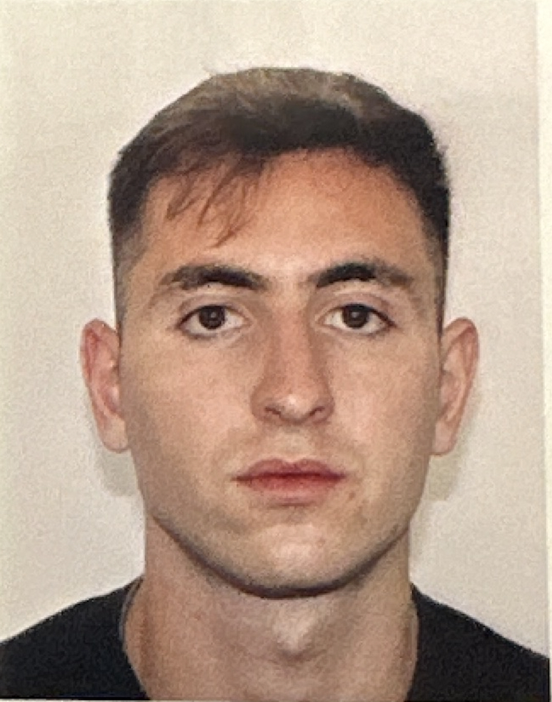

Hi, my name is Oliver Hannaoui. I am currently an M1 student in Applied Mathematics and Statistics at the Polytechnic Institute of Paris, hosted by École Polytechnique. Previously, I spent two formative years as a Senior Research Analyst at the Federal Reserve Bank of New York after graduating with degrees in Economics and Statistics from the University of California, Davis.